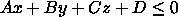

Copyright © 1994, 1996, 1999 Information Geometers Ltd and The University of Bath
Euclidean space is also smaller than the Universe, in the sense that you can have things in it that approach 0 in size; whereas quantum mechanics stops you from doing that in the real Universe.
SvLis, which is also as straight as a die (and noble, chivalrous, brave,
and kind to animals), works in the nearest a computer can get to Euclidean
space; but, like all computer programs, it is constrained by the finite
nature of computers. The floating-point numbers
it uses are a compromise imposed by the need for speed, and the need not
to use up large amounts of memory storing numbers to arbitrary precision
as algebra systems such as Mathematica and Reduce do .
.
Different computers--and different C++ compilers--have
differing representations for int and long, and for float
and double. This can cause some problems when software is being
ported from one computer--or compiler--to another. To ameliorate these
problems as much as possible, svLis #defines two types in the
file enum_def.h. These are sv_real
and sv_integer , and are usually set to be
float
and long respectively. All of svLis's internal definitions are
done in terms of sv_real and sv_integer .
A list of the functions and operators that svLis uses to operate on sv_reals
and sv_integers appears within the User Manual, on Page
.
A list of the functions and operators that svLis uses to operate on sv_reals
and sv_integers appears within the User Manual, on Page  .
.
struct sv_point
{
sv_real x, y, z;
// Constructor defaults to the origin....
sv_point(sv_real a=0, sv_real b=0, sv_real c=0)
{x=a; y=b; z=c;}
// Modulus and normalization member functions.
sv_real mod() const;
sv_point norm() const;
};
Why not use the word vector? Unfortunately,
lots of software uses the word vector to refer to a linear array
of entities, and so there would be a possibility of confusion if svLis
were to use it for a real vector. Besides, point sounds less
ostentatious.
All the operations of vector arithmetic
are defined for sv_points; if p and q are two
points, then p + q
gives their vector sum , and p
- q their vector difference.
p*q
gives an sv_real that is their scalar product
, and p q
gives another sv_point that is their vector product
. You can also multiply or divide an sv_point by an sv_real,
which scales it, and negate
its coordinates by using the monadic minus operator. A couple of functions
are defined for sv_points, too. The function p.mod()
returns a sv_real which is the modulus
(that is the length) of p,
and p.norm() returns
p
divided by its modulus, which normalizes
it; that is, it returns a sv_point of unit length in the same
direction as p.
q
gives another sv_point that is their vector product
. You can also multiply or divide an sv_point by an sv_real,
which scales it, and negate
its coordinates by using the monadic minus operator. A couple of functions
are defined for sv_points, too. The function p.mod()
returns a sv_real which is the modulus
(that is the length) of p,
and p.norm() returns
p
divided by its modulus, which normalizes
it; that is, it returns a sv_point of unit length in the same
direction as p.
Note that svLis overloads
the  operator; it means both vector product
for points, and exponentiation for primitives (see
Page
operator; it means both vector product
for points, and exponentiation for primitives (see
Page  ).
As we saw on Page
).
As we saw on Page  ,
it means symmetric difference for sets, too. A slightly tedious aspect
of C++ intrudes here: you can't change the precedence
of the operators in the language
,
it means symmetric difference for sets, too. A slightly tedious aspect
of C++ intrudes here: you can't change the precedence
of the operators in the language .
The operator
.
The operator  ,
which means XOR in native C++,
has a very low precedence; hence you must use brackets.
,
which means XOR in native C++,
has a very low precedence; hence you must use brackets.
The second simple geometric structure that svLis uses is a straight
line in space (Figure 8), which we met
briefly on Page  as the axis of a cylinder. Here is the main part of the sv_line
structure:
as the axis of a cylinder. Here is the main part of the sv_line
structure:
struct sv_line
{
sv_point direction, origin;
sv_line() { }
sv_line(const sv_point& a, const sv_point& b)
{
direction = a.norm();
origin = b;
}
// Plus various member functions....
};
The line is represented by two points. The first, direction,
is a unit-length sv_point which orientates the line; the second,
origin
, locates it. The line runs through origin, and distance, t
(say), along it is measured in direction. The line is thus parametric.
To find the point on the line l at a given parameter value, t, a member function called point is provided:
sv_point p_on_line = l.point(t);This just multiplies direction by t and adds the resulting sv_point to origin.
You can also translate a line in space by adding or subtracting a point to or from it. A new line is generated with the point added to the origin of the old line.
Finally, note that the null constructor
gives the Z axis as the line. There are more functions that act on points,
lines and other simple geometric structures. For a complete list see Page  .
.

We'll come to what the jargon means in a moment, but let's start by
looking at what this inequality does. Suppose you take a point (xp,
yp,
zp)
in space and substitute it into the left-hand side of the inequality. Clearly
the result will be a number, and--as is the way with numbers--that number
will either be positive, zero, or negative. If it's zero or negative, then
the inequality is satisfied, or, to put it another way, the inequality
is true for (xp,
yp,
zp).
If the number is positive, then the inequality is false for the point (xp,
yp,
zp).
The inequality will do this for any point, and so serves to divide all
of space (that is, all points) into two parts: a semi-infinite region where
the inequality is true, and another semi-infinite region where the inequality
is false. We encountered this idea when half-planes were first mentioned
on Page  .
SvLis considers the region of space where the inequality is true (that
is wherever points give a negative or zero result when substituted into
it) to be solid. In fact a nitpicking distinction is made between the negative
region (which really is solid) and the sheet of zero thickness where the
result is exactly zero (which is surface). That sheet is flat. It is the
plane that generates the half-space: the flat interface between solid and
air.
.
SvLis considers the region of space where the inequality is true (that
is wherever points give a negative or zero result when substituted into
it) to be solid. In fact a nitpicking distinction is made between the negative
region (which really is solid) and the sheet of zero thickness where the
result is exactly zero (which is surface). That sheet is flat. It is the
plane that generates the half-space: the flat interface between solid and
air.
Back to the jargon. The inequality is called implicit because
the actual surface--the interface between the two regions solid and air--is
implied by the inequality, not generated by it .
The inequality is said to be normalized when A2
+ B2 + C2 = 1. In fact, the vector
(A,B,C) is the normal vector of the half-plane, so
what this is saying is that the normal vector has a length of 1. (You end
up having to refer to a normalized normal vector--the jargon has
tripped over its own silly flat feet.)
.
The inequality is said to be normalized when A2
+ B2 + C2 = 1. In fact, the vector
(A,B,C) is the normal vector of the half-plane, so
what this is saying is that the normal vector has a length of 1. (You end
up having to refer to a normalized normal vector--the jargon has
tripped over its own silly flat feet.)
But what about the value of the number we get when we substitute (xp,
yp,
zp)
into the left-hand side of the inequality? This, it turns out, measures
distance to the plane (distances
on the solid side being negative, of course). This value is called a potential
value (and the left-hand side of the inequality is called a potential function).
As we shall see, more or less anything which can generate potential values
for points in space can be used by svLis as a primitive shape. The plane
potential function, A x + B y + C z + D, is
just about the simplest of these .
.
The svLis sv_plane structure is defined in geometry.h; here is a slightly simplified version:
struct sv_plane
{
sv_point normal;
sv_real d;
sv_plane() { } // Null constructor.
// Constructor takes a normal vector (a) and
// a point through which the plane is to pass (b).
sv_plane(const sv_point& a, const sv_point& b)
{
normal = a.norm();
d = -b*normal;
}
// Constructor for when we know the normal and d.
sv_plane(const sv_point& n, sv_real dee)
{
d = dee;
sv_real div = n.mod();
normal = n;
if (div == 0.0)
svlis_error("plane constructor",
"0-length normal", SV_WARNING);
else
{
div = 1.0/div;
normal = normal*div;
d = d*div;
}
}
// Constructor for when we know the coefficients.
sv_plane(sv_real a, sv_real b, sv_real c,
sv_real dee)
{
sv_point n = sv_point(a,b,c);
*this = sv_plane(n,dee);
}
};
It is convenient for the A, B, and C coefficients
to be stored as the sv_point called normal, as they form
the normal vector to the plane. This normal vector
has unit length. The value of D (d in the struct)
in the equation gives minus the distance between the plane and the origin.
Note the call to the procedure svlis_error (see Page );
this procedure is called at all places in svLis when an error is detected.
);
this procedure is called at all places in svLis when an error is detected.
The functions and operators that apply to planes are listed within the
User Manual, on Page  .
.
Adrian Bowyer